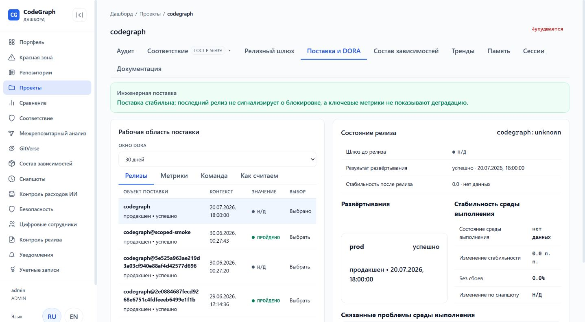
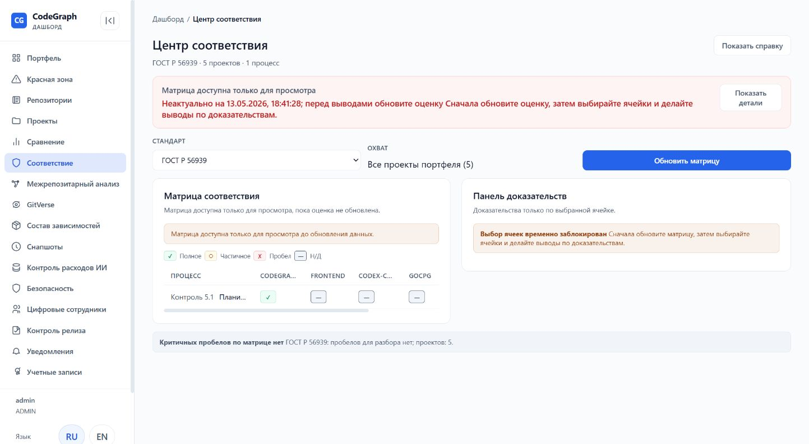
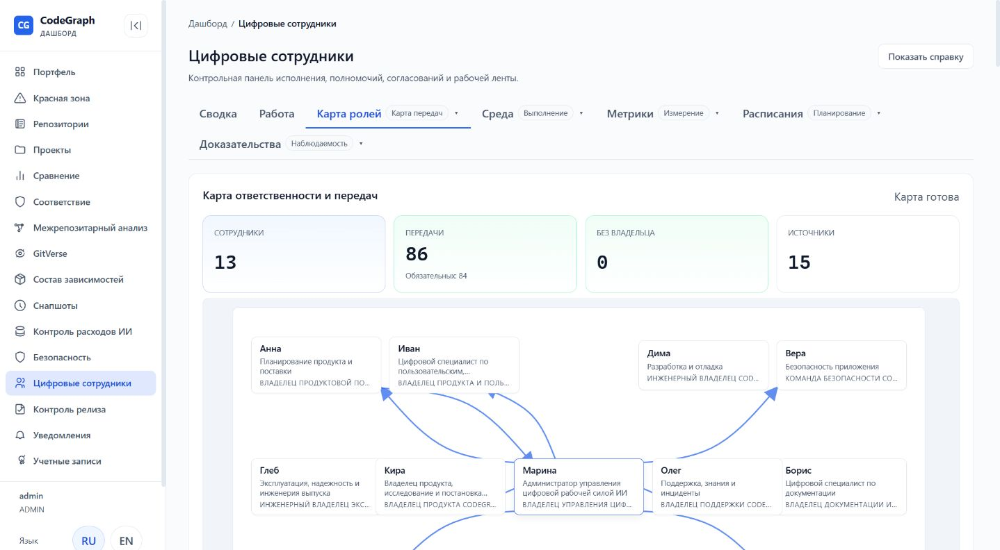

Для CPO
Начните с портфельной модели, прослеживаемости и готовности требования. В конце проверьте, какое решение остаётся за владельцем инициативы.
Как устроен управляющий контур CodeGraph?
CodeGraph создаёт единый управляющий контур между продуктовой инициативой, требованиями, инженерной работой и технической готовностью к выпуску.
CodeGraph — решение для управляемой разработки цифровых продуктов с участием ИИ. Оно связывает портфель инициатив, требования, код, тесты, аудиты и релизные проверки.
Цифровые сотрудники выполняют повторяемую работу. Люди определяют приоритеты, утверждают архитектуру, принимают риски и решают вопрос выпуска.
Маршрут разделяет разделы по задаче: описание механики отдельно, вопросы для проверки в вашей рабочей среде отдельно.
Начните с портфельной модели, прослеживаемости и готовности требования. В конце проверьте, какое решение остаётся за владельцем инициативы.
Перейдите к архитектуре, CPG, границам данных и среда выполнения-топологии. Отдельно отметьте, что требует проверки в вашей рабочей среде.
Читайте разделы о контролях, доказательствах, DLP и остаточном риске. Эта страница не является сертификатом соответствия.
Сопоставьте роли, передача работы и ответственности, проверки и пакет готовности с одной инициативой пилота.
Оценочное время чтения: 12 минут. Синтетические примеры помечены явно; публично подтверждённого клиентского измерения в этом материале нет.
PDLC отвечает за путь от продуктового замысла до решения о ценности. SDLC превращает согласованные требования в код, проверки и выпуск. CodeGraph связывает оба цикла общими требованиями, заданиями и подтверждениями.
Портфельная модель объединяет продукты, проекты, инициативы и общие сервисы. Руководитель видит зависимости между ними, основания текущего статуса и решения, которые задерживают поставку.
Рабочий процесс проводит инициативу через требования, оценку влияния, реализацию, проверки и решение о выпуске. На каждом шаге сохраняются ответственный, ожидаемый результат и подтверждение выполнения.
Карта показывает, какая роль отвечает за каждый этап поставки и кому она передаёт результат. По ней видно разделение полномочий между продуктом, разработкой, проверками, документацией и эксплуатацией.
Имя служит устойчивым идентификатором роли. Функция, полномочия и ответственный человек определяют её смысл.
Каждая цифровая роль описывается одним проверяемым паспортом. Он фиксирует владельца, событие запуска, границы доступа, ожидаемый артефакт, критерии приёмки, передачу работы и условия эскалации.
| Группа паспорта | Обязательные поля | Управленческий смысл |
|---|---|---|
| Идентичность | Название роли, миссия, человек-владелец, событие запуска | Понятно, зачем и по чьему поручению начинается работа |
| Границы | Обязательные входы, разрешённые инструменты, запрещённые действия | Полномочия проверяются до исполнения |
| Результат | Выходной артефакт, критерии приёмки, подтверждение, получатель передача работы и ответственности | Работу можно принять и передать без скрытого контекста |
| Контроль | Условия остановки, эскалация, метрики, версия, дата пересмотра и статус | Роль можно остановить, оценить и изменить через владельца |
CodeGraph поддерживает проектные расписания для составного аудита и обновления документации. Для каждого проекта сохраняются вид действия, cron-выражение, часовой пояс, политика пропущенного запуска, сервисная учётная запись, владелец и состояние расписания.
Активное расписание создаёт или обновляет Temporal Schedule. Каждый запуск по расписанию получает постоянный идентификатор операции, ограничение на один активный запуск, проектный контракт задачи и ссылки на подтверждения. Аудитные окна распределяются без пересечений; остановленное, просроченное или неуспешное расписание остаётся видимой блокировкой.
| Процесс | Проверяемый результат | Ответственный контур |
|---|---|---|
| Составной аудит | Снимок аудита, снимок dashboard и контракт задачи | Дмитрий готовит результат; Глеб контролирует исполнение расписания |
| Обновление документации | Снимок документации, актуальный индекс и контракт задачи | Борис принимает полноту документации |
| Сбой или пропуск | Статус запуска, причина блокировки и ссылки на подтверждения | Глеб восстанавливает исполнение; владелец результата повторяет приёмку |
Модель связывает исходное требование с архитектурным решением, затронутым кодом, тестами, найденными рисками и итоговым подтверждением. Так команда проверяет статус и его основание.
Готовность требования складывается из явных критериев: согласованного замысла, перечня затронутых компонентов, выполненной реализации и принятых проверок. Открытый критерий сохраняет видимую блокировку.
Архитектура разделяет управление продуктом, управляемое исполнение и инженерные системы. Схемы ниже показывают внешние границы CodeGraph, внутренние компоненты и путь данных между ними.
| Слой | Состав | Граница ответственности |
|---|---|---|
| Управление продуктом | Портфель, проекты, инициативы, требования и политики | Люди утверждают приоритеты и правила |
| Управляемое исполнение | Роли, задания, состояние, передачи, подтверждения и риски | Каждая роль действует в заданных границах |
| Инженерный слой | Трекеры, Git, граф кода, CI/CD, тесты и анализаторы | Системы заказчика сохраняют роль первичных источников |
CodeGraph состоит из нескольких исполняемых процессов. FastAPI обслуживает веб-интерфейс, REST и подтверждённые сервером переходы состояния. MCP, CLI, ACP и LSP дают отдельные интерфейсы для агентов, автоматизации и IDE. GoCPG строит и читает граф кода. Исполнитель Temporal продолжает возобновляемые процессы, когда этот режим включён.
| Процесс | Обязанность | Что он не делает |
|---|---|---|
| FastAPI | Проекты, загрузка, веб-интерфейс, REST, WebSocket и переходы состояния задач | Не пишет CPG напрямую |
| MCP | Инструменты для агентов, планирование, поиск и предварительные проверки | Не подменяет подтверждённое сервером закрытие |
| GoCPG | Разбор кода, обогащение графа, запросы gRPC и запись CPG | Не владеет жизненным циклом продукта и задач |
| Исполнитель Temporal | Возобновляемые процессы задач, передач работы и загрузки в выбранном режиме | Не владеет основным состоянием |
| CLI, ACP и LSP | Команды автоматизации и навигация в IDE | Не обходят границы проекта и обязательные проверки |
Для полной загрузки ProjectImportPipeline получает локальный путь или URL клонирования, регистрирует задание и делегирует разбор GoCPG. При частичном обновлении он передаёт изменённые файлы тому же GoCPG. Только GoCPG меняет отдельную базу DuckDB проекта: процессы Python работают через gRPC или ограниченный запуск подпроцесса.
При чтении MCP и другие интерфейсы сначала определяют активный проект и проверяют права. Запросы по графу идут в GoCPG Query или Navigation через gRPC. Объединённый поиск может дополнить факты CPG контекстом OpenViking и разрешёнными локальными документами; источник каждого результата остаётся видимым.
Состояние разделено по назначению: граф кода хранится отдельно от контрактов задач, а документы и контекст не подменяют серверное решение. Для каждого типа данных указан владелец записи и правило восстановления.
| Данные | Хранилище | Владелец и правило |
|---|---|---|
| CPG, связи, индексы и метрики | Отдельный DuckDB-файл проекта | GoCPG — единственный владелец записи |
| Проекты, загрузки, контракты задач, передачи, подтверждения и AI FinOps | PostgreSQL | Прикладной слой; это основное состояние SDLC |
| Роли, контракты персон, навыки и шаблоны процессов | Файлы репозитория | Изменяются через версионируемое ревью |
| Документы, комментарии и контекст сессий | OpenViking | Контекстная проекция; не подтверждает закрытие задачи |
Между этими хранилищами нет общей транзакции. CodeGraph компенсирует это контролем актуальности и синхронизации, запретом перехода при неполных данных и возможностью полностью перестроить CPG.
Поставка по PRD создаёт родительский контракт задачи, отдельные задания для контуров ответственности и типизированные передачи работы. Каждый исполнитель получает ограниченный объём работы и возвращает собственное подтверждение. Temporal может продолжать возобновляемое исполнение, но основное состояние задач и передач хранится в PostgreSQL.
Предварительная MCP-проверка показывает отсутствующие критерии и контуры, но её результат остаётся рекомендательным. Для закрытия FastAPI перечитывает контракт задачи и цепочку передач из PostgreSQL, проверяет обязательные подтверждения контуров, неотменяемый учёт Евы и дополнительные проверки для инцидентов. Только после этого сервер сохраняет итоговый статус.
Четыре актуальных экрана показывают портфель, поставку проекта, технические контроли и передачу работы между цифровыми сотрудниками. Изображения открываются в полном размере.




Ниже показан синтетический пакет для инициативы «Ограничение административных действий». Он не является рабочей записью и не подтверждает выполнение конкретного проекта; структура полей и цепочка подтверждений основаны на реальных формах user stories, PRD, требований, приёмки, аудита и автодокументации в репозитории.
В каждом результате указаны владелец, версия, область проверки и следующий шаг. Статус «принято» относится к конкретному артефакту и не заменяет решение человека о выпуске.
initiative: PI-DEMO-42
status: accepted-for-discovery
owner: CPO / Product Discovery
US-DEMO-01 Как владелец продукта, я хочу ограничить административные действия
по роли и проекту, чтобы снизить риск ошибочной выдачи доступа.
Acceptance: матрица ролей согласована; несанкционированное действие
отклоняется; запись аудита содержит субъекта, объект и причину.
US-DEMO-02 Как архитектор, я хочу видеть затронутые сервисы и общие библиотеки,
чтобы принять риск изменения границ доступа до разработки.
Acceptance: область влияния построена из графа; общий компонент
отмечен; открытый риск имеет владельца и срок решения.
US-DEMO-03 Как ответственный за выпуск, я хочу получить единый пакет тестов,
аудита, документации и отката, чтобы принять решение по релизу.
Acceptance: обязательные проверки имеют результат или блокировку;
незакрытый критический риск запрещает переход в Ready-to-release.prd_id: PRD-DEMO-ACCESS-01
title: Ограничение административных действий
status: accepted-for-implementation
owner_lane: Анна / Product Delivery
traceability_owner: Иван / Traceability
problem: роль администратора шире фактической зоны ответственности проекта.
goal: проверять действие по субъекту, проекту, роли и политике доступа.
in_scope: policy check, отказ с причиной, журнал аудита, обратная совместимость.
out_of_scope: замена корпоративного IdP и изменение модели владения проектами.
required_evidence:
- утверждённые user stories и FR/NFR
- область влияния и архитектурное решение
- результат QA и AppSec
- автодокументация изменённых публичных контрактов
- план отката и решение ответственного человекаИз этого PRD CodeGraph строит отдельные задания для продуктового, аналитического, инженерного, проверочного, документационного и релизного контуров. Ниже — тот же пример в формате требований и приёмки.
| ID | Тип | Требование | Связанный результат |
|---|---|---|---|
| FR-DEMO-01 | FR | Проверять каждое административное действие по субъекту, проекту и назначенной политике. | Тесты разрешения и отказа; запись аудита |
| FR-DEMO-02 | FR | Возвращать стабильный код отказа и объяснение, не раскрывая лишние сведения о политике. | Контракт API; негативные тесты |
| FR-DEMO-03 | FR | Связывать изменение политики с user story, затронутым кодом и решением ревьюера. | Карта прослеживаемости; структурное ревью |
| NFR-DEMO-01 | NFR | Не смешивать данные проектов и сохранять tenant boundary во всех путях проверки. | AppSec аудит; изоляционные тесты |
| NFR-DEMO-02 | NFR | Повторный запуск проверки с тем же snapshot даёт воспроизводимый результат. | аудит snapshot; тест подтверждение |
| NFR-DEMO-03 | NFR | Незакрытая обязательная проверка блокирует готовность к выпуску. | готовность к выпуску; решение ответственного сотрудника |
| Принятая роль | Артефакт приёмки | Что считается достаточным результатом |
|---|---|---|
| Кира / исследование продукта | Бриф исследования и запись решения | Проблема, аудитория, целевой результат, ограничения и владелец решения зафиксированы. |
| Анна / продуктовая поставка | PRD и контракт задачи | Область работ, зависимости, критерии и передача в инженерный контур согласованы. |
| Сергей / системный анализ | Матрица функциональные и нефункциональные требования | Требования атомарны, не дублируются и имеют проверяемый результат. |
| Иван / прослеживаемость | Карта прослеживаемости | User story → PRD → функциональные и нефункциональные требования → код → тест → приёмка связаны идентификаторами. |
| Дмитрий / реализация | Описание изменения и инженерные подтверждения | Изменения ограничены заданной областью; команды, снимок и известные пробелы указаны. |
| Рита / структурное ревью | Карта влияния и архитектурное ревью | Затронутые символы, зависимости, общий компонент и остаточный риск проверены. |
| Лена / контроль качества | План тестирования и результаты запуска | Позитивные, негативные, изоляционные и регрессионные проверки имеют результат. |
| Вера / безопасность приложения | Находка аудита и решение по риску | Находки подтверждены или отклонены с основанием; остаточный риск имеет владельца. |
| Борис / документация и память | Разница автодокументации и индекс | Публичные контракты и операционные инструкции обновлены, устаревшие ссылки отсутствуют. |
| Глеб / эксплуатация и SRE | Готовность к выпуску и план отката | Готовность, мониторинг, откат и блокирующие условия видимы до выпуска. |
| Ева / финансовый контроль | Подтверждения использования и затрат | Затраты и время привязаны к операции, области и итоговому статусу. |
audit_run_id: AUD-DEMO-2026-07-21-014
scope: services/access-control, snapshot: 8f3a1c2
runner: Дмитрий / Implementation; independent review: Вера / AppSec
status: conditional
checks:
unit: 86 passed, 0 failed
integration: 24 passed, 1 blocked (external IdP timeout not live-tested)
isolation: 12 passed (tenant A != tenant B)
traceability: 6/6 FR/NFR linked to tests or explicit decision
findings:
critical: 0
high: 1 DEMO-SEC-01 shared cache key omits project scope
medium: 2 DEMO-SEC-02 audit reason is optional on one legacy route
low: 3
autofix:
previewed: 2
applied: 0
reason: human approval required before mutation
release_decision: blocked until DEMO-SEC-01 is fixed and rechecked
evidence_refs: test://AUD-DEMO-2026-07-21-014, risk://DEMO-SEC-01document_id: AUTODOC-DEMO-ACCESS-01
source_snapshot: 8f3a1c2
freshness: current-at-snapshot
module: src/access/policy.py
public_symbols:
check_action(subject, project, action) -> Decision
explain_denial(decision) -> AuditReason
relationships:
inbound: api.admin_actions -> PolicyEngine.check_action
outbound: PolicyEngine.check_action -> AuditTrail.append
shared_component: src/authz/project_scope.py
requirements: FR-DEMO-01, FR-DEMO-02, NFR-DEMO-01, NFR-DEMO-02
tests: tests/access/test_policy.py::test_cross_project_denial
tests/access/test_audit.py::test_denial_contains_reason
known_gaps:
- external IdP timeout behavior is not live-tested
- legacy route requires documentation owner review
next_owner: Борис / Documentation MemoryПакет связывает пользовательскую ценность и PRD с требованиями, ролями, проверками и решением. При отсутствии обязательного артефакта CodeGraph показывает блокировку, владельца и следующий шаг.
Портфель, аудит и релизная проверка используют одну цепочку данных: зависимости, проблему, изменение, обязательные результаты и открытые риски.
Проекты получают статус из требований, зависимостей, проверок и открытых решений.
Проблемы связываются с компонентами, требованиями, исправлениями и повторными проверками.
Тесты, архитектура, безопасность, документация, эксплуатация и откат собираются в единый пакет.
CodeGraph связывает техническое требование с настройкой, кодом, проверкой и решением ответственного человека. Пакет даёт внутреннему аудиту материалы для оценки соответствия, но не заменяет сертификацию.
| Область | Что фиксирует CodeGraph | Кто принимает решение |
|---|---|---|
| Технический контроль | Требование, настройку, код и результат проверки | Владелец контроля |
| Внутренний аудит | Область, версию, инструмент, результат и ограничение | Ответственный за аудит |
| Остаточный риск | Последствие, срок и варианты снижения | Уполномоченный человек |
| Соответствие стандарту | Технические подтверждения для оценки | Заказчик и независимая сторона |
Пакет технических подтверждений не равен сертификации. Публичное описание не заявляет соответствие стандарту без отдельной оценки.
Сценарии описывают одну модель для разных задач: управления портфелем, разработки функции, аудита, релиза, технических контролей и кода от ИИ. Каждый маршрут ведёт к отдельному разбору.
Общие сервисы связывают проекты; статус показывает зависимости и блокировки.
Инициатива проходит через требования, реализацию, тесты и релизное решение.
Граф показывает архитектуру, потоки данных и связанные проблемы.
Платформа собирает обязательные проверки и открытые риски.
Требования политики связываются с настройками и проверками.
Изменения получают границы, связь с требованиями и независимую проверку.
Отдельная конкурентная матрица сравнивает CodeGraph с платформами ALM, SPM, DevSecOps, управления выпуском и ИИ-агентами по точным продуктовым наборам и шести сценариям.
Пилот проверяет CodeGraph на ограниченной области с исходным замером и заранее согласованными критериями. Команда сравнивает фактический процесс до и после внедрения, затем решает, стоит ли расширять охват.
Ссылки ведут к публичным материалам. Их статус, дата и ограничения должны быть прочитаны вместе с утверждением страницы.
Публичный whitepaper, обновление 22 июля 2026; описывает модель и ограничения, но не клиентский результат.
Матрица сценариев CodeGraph и альтернатив; публичный материал, границы сравнения указаны в документе.
Обзор технических контролей; не является сертификатом соответствия.
На встрече сверим модель продукта, владельцев состояния, хранилища, границы данных и путь к решению о выпуске.
Обновлено: 28 июля 2026
{kind=link}
{kind=link}
{kind=link}